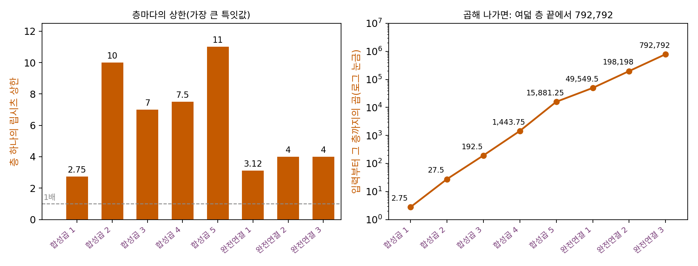
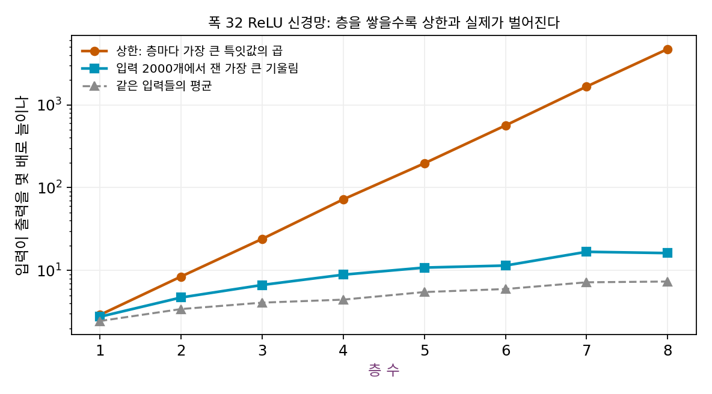
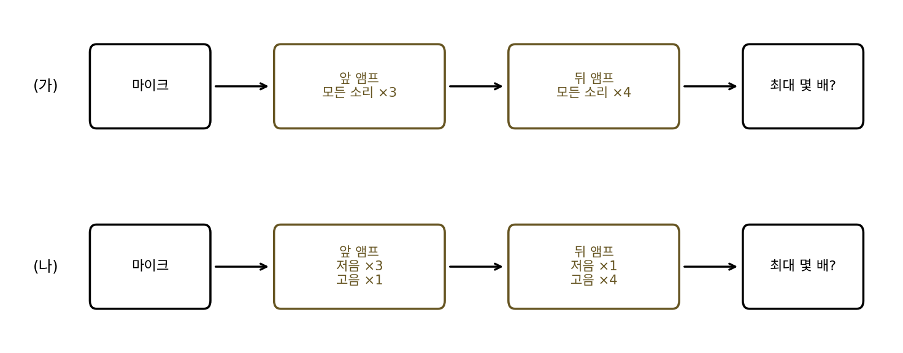
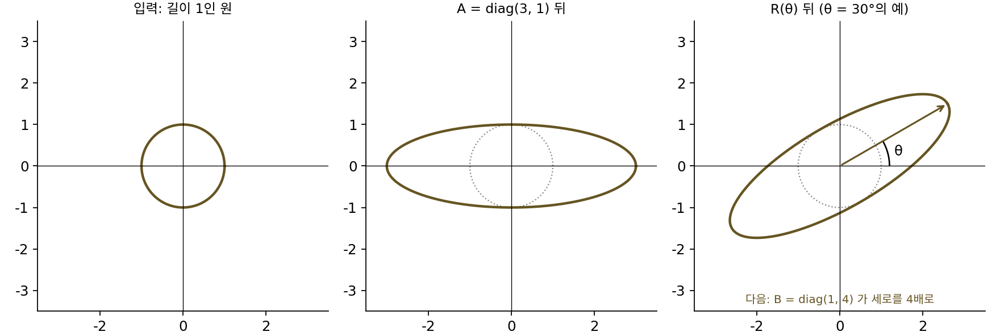
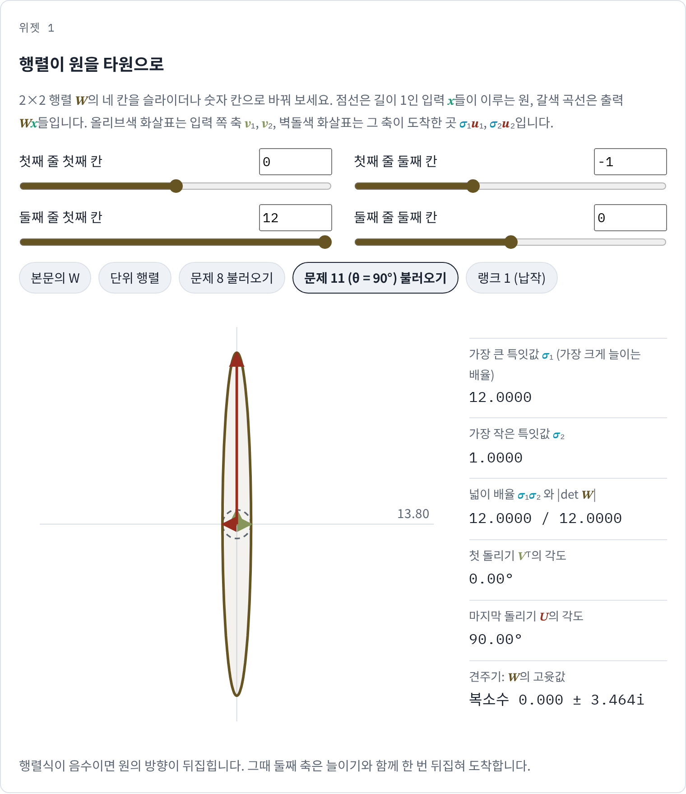
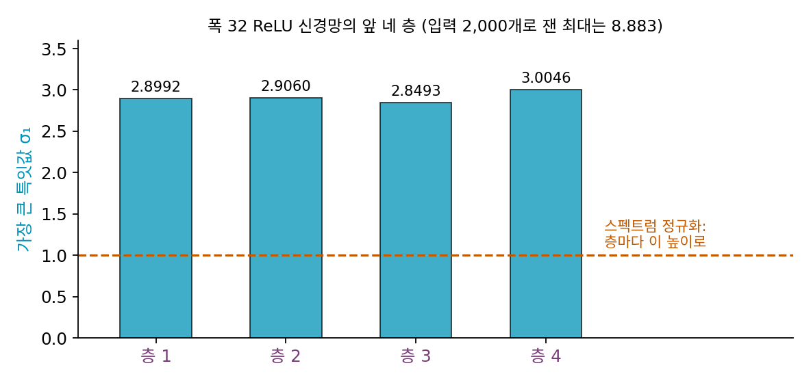

스펙트럼 노름: 층의 립시츠 상수와 층을 쌓은 곱
행렬 하나가 길이 1인 입력을 가장 크게 늘이는 배율이 가장 큰 특잇값이라는 것을 보았다. 그런데 신경망은 행렬 하나로 끝나지 않고 행렬 곱과 활성화 함수(ReLU 같은)를 번갈아 수십 번 거친다. 층마다의 배율을 알면 신경망 전체의 립시츠 상수도 알 수 있을까? 판다 사진에 눈에 안 보이는 노이즈를 더하자 분류기의 답이 바뀐 일처럼 입력의 작은 변화가 출력을 크게 바꾸는 일은 왜 층을 많이 쌓은 신경망에서 생길까?
역사: 「흥미로운 성질」 논문의 층별 상한
판다 사진보다 한 해 앞선 2013년 말, 크리스티안 세게디(Christian Szegedy)와 동료들은 「신경망의 흥미로운 성질(Intriguing properties of neural networks)」을 공개했다(국제 표현 학습 학회 ICLR 2014). 그들이 보고한 두 성질 가운데 하나가, 잘 학습된 이미지 분류기가 눈으로는 구별할 수 없을 만큼 작은 변화에 답을 바꾼다는 것이었다. 적대적 예제라는 말이 여기서 나왔다.
그들은 층마다 립시츠 상수의 상한을 구해 곱하는 것으로 이 불안정을 재는 방법도 함께 적었다. ReLU 층은 행렬의 가장 큰 특잇값보다 더 늘이지 못하고, 최대 풀링은 늘이지 않으므로, 층마다 가장 큰 특잇값을 구하면 상한이 나온다. 그들은 2012년 이미지넷 대회에서 우승한 합성곱 신경망(알렉스넷)의 여덟 층에 대해 상한 2.75, 10, 7, 7.5, 11, 3.12, 4, 4를 표로 실었다. 이 여덟 수를 곱한 792,792는, 입력을 아주 조금 바꿔도 출력이 그 79만 배까지 바뀔 수 있다는 상한이다. 논문은 큰 상한이 곧 적대적 예제가 있다는 뜻은 아니지만, 상한이 작으면 그런 예제가 생길 수 없다고 짚고, 상한을 페널티로 넣어 학습하는 방법을 제안했다.


2013년이면 GPU로 알렉스넷을 학습하던 때잖아요. 층마다 특잇값을 곱하는 대신 신경망 전체의 립시츠 상수를 바로 재면 되지 않았어요?

신경망 전체의 상수를 「잰다」는 건 무엇을 하는 일이죠?

음, 입력 두 개를 넣어 출력 차이를 입력 차이로 나누고… 아, 모든 쌍을 다 해 봐야 하네요. 몇 쌍만 하면 구간 단속 카메라처럼 하한밖에 안 나와요.

알렉스넷 입력은 224 × 224 칸에 색이 셋이라 15만 칸이 넘잖아요. 그 공간에서 가장 나쁜 방향을 다 뒤질 수는 없으니까, 층 하나는 행렬이라 특잇값으로 정확히 구할 수 있다는 것을 쓴 거군요.

그렇게 나온 수가 792,792예요. 논문은 이 수를 실제 배율이라고 하지 않고, 상한이 크다고 적대적 예제가 꼭 있는 것은 아니라고 짚었죠.

그러면 층마다의 상한을 곱한 값과 실제 배율이 얼마나 벌어지는지는, 층 수를 늘려 가며 둘 다 재 보면 알 수 있지 않을까요?
층을 쌓으면 배율이 곱해진다
행렬 하나에서 시작하자. 행렬 W의 립시츠 상수, 곧 ‖Wx − Wy‖ ≤ L‖x − y‖를 지키는 가장 작은 L은 길이 1인 입력을 가장 크게 늘이는 배율이고, 그것이 가장 큰 특잇값 σ₁이다. 이 배율을 행렬의 스펙트럼 노름 (행렬이 길이 1인 입력을 가장 크게 늘이는 배율 / spectral norm)이라 하고 ‖W‖₂로 적는다. 본보기 행렬 [[2, 1], [0, 1]]의 스펙트럼 노름은 2.2882다.
층을 쌓으면 어떻게 될까? 입력의 차이가 첫 행렬을 지나며 많아야 ‖W₁‖₂배, ReLU를 지나며 많아야 1배(ReLU는 두 수의 차이를 키우지 않는다), 다음 행렬을 지나며 많아야 ‖W₂‖₂배가 된다. 그러니 신경망 전체의 립시츠 상수는 층마다의 스펙트럼 노름을 곱한 것을 넘지 않는다.
이 곱이 실제와 얼마나 가까운지 숫자로 보자. 폭 32인 ReLU 신경망을 층 1개부터 8개까지 쌓았다. 가중치는 층마다 평균 0, 표준편차 1.5/√32인 정규분포에서 뽑았고(씨앗 고정), 그래서 층마다 가장 큰 특잇값이 2.73~3.00 사이다. 상한은 그 곱이다. 실제 배율은 무작위 입력 2,000개마다 입력에서 출력까지의 자코비안(출력의 각 칸을 입력의 각 칸으로 편미분한 행렬)을 구해 그 스펙트럼 노름을 잰 것이다.
| 층 수 | 상한(곱) | 잰 값 가운데 최대 | 잰 값의 평균 | 상한 ÷ 잰 최대 |
|---|---|---|---|---|
| 1 | 2.899 | 2.756 | 2.448 | 1.05 |
| 2 | 8.425 | 4.707 | 3.415 | 1.79 |
| 4 | 72.13 | 8.883 | 4.438 | 8.12 |
| 6 | 564.3 | 11.45 | 5.963 | 49.3 |
| 8 | 4,731 | 16.20 | 7.345 | 292 |
층이 하나일 때는 상한과 실제가 거의 같다. 층을 쌓을수록 상한은 층마다 약 2.9배씩 불어나는데, 잰 값은 훨씬 천천히 자란다. 여덟 층이면 둘의 차이가 292배나 되는데, 곱셈의 부등식이 「각 층이 가장 크게 늘이는 방향이 서로 이어져 있다」는 가장 나쁜 경우를 가정하기 때문이다. 실제로는 한 층이 가장 크게 늘인 방향이 다음 층에서 가장 크게 늘어나는 방향과 어긋나고, ReLU가 일부 칸을 0으로 지운다. 잰 값은 입력 2,000개 가운데 가장 큰 것이라 참값의 하한 추정이고, 곱은 위쪽 한도다. 참값은 둘 사이 어딘가에 있다.

큰 행렬의 가장 큰 특잇값은 특잇값 분해 전체를 계산하지 않고도 구할 수 있다. 아무 벡터에서 출발해 W와 Wᵀ를 번갈아 곱하고 길이로 나누기를 되풀이하면, 벡터가 가장 크게 늘어나는 방향으로 돌아서고 그 배율이 σ₁에 다가간다. 본보기 행렬에서 (1, 0)으로 출발하면 추정값이 2.236068, 2.287087, 2.288221, 2.288245로 네 번 만에 참값 2.288246의 소수 다섯째 자리까지 맞는다. 파워 이터레이션이라 부르는 이 방법은 리하르트 폰 미제스(Richard von Mises)와 힐다 폴라체크-가이링거(Hilda Pollaczek-Geiringer)가 1929년에 정리한 글로 흔히 인용된다.
ML에서: 스펙트럼 정규화
미야토 다케루(宮戸岳)와 동료들은 2018년 ICLR에 낸 「생성적 적대 신경망을 위한 스펙트럼 정규화(Spectral Normalization for Generative Adversarial Networks)」에서, 층마다 가중치를 그 층의 가장 큰 특잇값으로 나눠 쓰자고 했다. 그러면 층마다 스펙트럼 노름이 1이 되고, 곱셈 부등식에 따라 신경망 전체의 립시츠 상수가 1을 넘지 않는다. 가장 큰 특잇값은 학습 스텝마다 파워 이터레이션을 한 번씩만 돌려 추정하고, 그 벡터를 다음 스텝으로 넘겨 이어 쓴다. 가중치가 스텝마다 조금씩만 바뀌니 한 번이면 충분하다는 것이다. 왜 생성적 적대 신경망의 판별기(진짜와 가짜를 가르는 신경망)가 1-립시츠여야 하는지는 분포 사이의 거리를 재는 최적화를 다룰 때 이어서 본다.
문제 10. 앰프 두 대를 이으면
마이크 소리를 앰프 두 대에 차례로 통과시킨다. (가) 앞 앰프가 모든 소리를 3배, 뒤 앰프가 모든 소리를 4배로 키우면 소리는 최대 몇 배가 되는가? (나) 앞 앰프는 저음만 3배로 키우고 고음은 그대로 두며, 뒤 앰프는 고음만 4배로 키우고 저음은 그대로 둔다. 저음, 고음, 둘이 섞인 소리는 각각 최대 몇 배가 되는가? (다) 두 경우의 「앰프 배율의 곱」은 같은가?

3 × 4 = 12배요. (나)도 앰프 배율이 3과 4니까 12배겠죠.
(나)에서 저음만 있는 소리를 따라가 보세요. 두 앰프를 지나면서 각각 몇 배가 되죠?
앞에서 3배, 뒤에서는 저음이라 그대로니까 3배요. 고음은 앞에서 그대로, 뒤에서 4배라 4배고요. 12배가 되는 소리가 없어요.
행렬로 쓰면 앞이 diag(3, 1), 뒤가 diag(1, 4)야. 곱은 diag(3, 4)이고 스펙트럼 노름은 4. 각자의 노름을 곱한 12는 상한일 뿐이야. 섞인 소리도 저음 성분은 3배, 고음 성분은 4배라 4배를 넘지 못해.
(가)와 (나)의 차이는 어디서 생겼나요?

(가)는 두 앰프가 같은 소리를 크게 키워서 배율이 그대로 곱해지고, (나)는 크게 키우는 소리가 서로 달라서 곱해지지 않아요. 곱셈 부등식이 등식이 되려면 앞 층이 가장 크게 늘인 방향을 뒤 층도 가장 크게 늘여야 해요.

조별 과제에서 자료 조사 잘하는 친구 따로, 발표 잘하는 친구 따로면 「둘의 능력을 곱한 만큼」 잘되진 않는 거랑 같네요.
문제 11. 두 행렬 사이를 돌리면
A = diag(3, 1), B = diag(1, 4) 사이에 θ만큼 돌리는 행렬 R(θ)를 끼운 곱 BR(θ)A를 본다. (가) θ = 0°, 30°, 45°, 60°, 90°에서 스펙트럼 노름을 구하라. (나) 곱셈 상한 ‖B‖₂‖R‖₂‖A‖₂는 θ에 따라 바뀌는가? (다) θ = 90°일 때 곱 행렬은 무엇이고, 왜 상한에 닿는가? (풀어 본 뒤 위젯 1의 「문제 11 (θ = 90°) 불러오기」로 확인해 보자.)

돌리기는 길이를 안 바꾸니까 ‖R‖₂ = 1이야. 그러면 사이에 돌리기를 끼워도 아무 일도 없고, θ와 상관없이 문제 10처럼 4가 나올 것 같아.
θ = 90°에서 A가 3배로 늘인 가로 방향은 R을 지나 어디로 가죠?

세로로요. 그리고 B는 세로를 4배로 늘이니까… 3 × 4 = 12배예요. 곱 행렬은 첫째 줄 (0, −1), 둘째 줄 (12, 0)이고 특잇값이 12와 1이에요. 돌리기가 길이는 안 바꿔도 방향을 바꿔서, 늘이는 방향끼리 이어 줬어요.
차례로 계산하니 θ = 0°에서 4, 30°에서 7.228, 45°에서 9.125, 60°에서 10.665, 90°에서 12야. 상한은 3 × 1 × 4 = 12로 늘 같고.

신경망의 층 사이에는 무엇이 이 「돌리기」 노릇을 할까요?

다음 층 행렬의 특잇값 분해에 들어 있는 첫 돌리기 Vᵀ예요. 앞 층의 출력 쪽 축 u₁과 뒤 층의 입력 쪽 축 v₁이 얼마나 나란하냐가 곱이 상한에 얼마나 다가가는지를 정해요. 무작위 층들은 축이 어긋나 있어서 층을 쌓을수록 상한과 실제가 벌어졌던 거고요.

반대로 학습이 축을 나란히 맞춰 버리면 상한 근처까지 커질 수도 있겠네요. 릴레이에서 바통을 받는 방향이 맞으면 속도가 그대로 이어지는 것처럼요.

문제 12. 층마다 1로 나누면
위의 폭 32 ReLU 신경망에서 앞 네 층만 쓴다. 층마다 가장 큰 특잇값은 2.8992, 2.9060, 2.8493, 3.0046이다. (가) 립시츠 상수의 상한은? 무작위 입력 2,000개에서 잰 자코비안 스펙트럼 노름의 최대는 8.883이다. (나) 층마다 가중치를 그 층의 가장 큰 특잇값으로 나누면(스펙트럼 정규화) 상한은 얼마가 되는가? 같은 입력 2,000개에서 잰 최대는 얼마일 것 같은가? (다) 정규화 뒤의 신경망에 무슨 걱정이 생기는가?

(가)는 네 수를 곱해서 72.13이에요. (나)는 층마다 1이니까 상한은 1이고, 원래 상한과 실제의 비가 8배쯤이었으니까 실제는 1/8 = 0.12쯤?
돌려서 확인해 보세요. 그리고 가까운 두 입력의 출력 거리도요.

잰 최대가 0.123, 평균이 0.062예요. 예상이 맞았네요. 거리 0.0671인 두 입력의 출력 거리가 정규화 전에는 0.1033인데, 뒤에는 0.0014로 줄었어요.
상한을 1로 묶었더니 실제 배율이 0.1 근처까지 내려갔어. 층을 지날 때마다 신호가 작아지는 거잖아. 층을 더 쌓으면 출력이 거의 0이 되지 않을까?
상한을 1로 맞춘 것이 실제를 1로 맞춘 것은 아니라는 말이죠. 그럼 실제로 쓸 때는 무엇을 함께 봐야 할까요?
상한은 지키되 실제 배율이 너무 작아지지 않는지요.

그런데 층마다 1로 눌렀는데 왜 0.1 근처까지 내려간 거야?
층마다 가장 큰 방향만 1로 눌렀으니 다른 방향들은 1보다 훨씬 작게 줄어 있고, ReLU가 일부 칸을 0으로 지우는 효과까지 겹쳐서야. 립시츠 상수가 작을수록 견고하지만, 지나치게 작으면 입력의 차이를 구별하지 못해.
소리가 찢어지지 않게 앰프마다 한도를 걸었더니 이번엔 너무 작아서 안 들리는 거네요. 그래서 판별기에 스펙트럼 정규화를 걸 때도 층을 너무 깊게 쌓지 않거나, 다른 방법을 섞는 거겠죠.